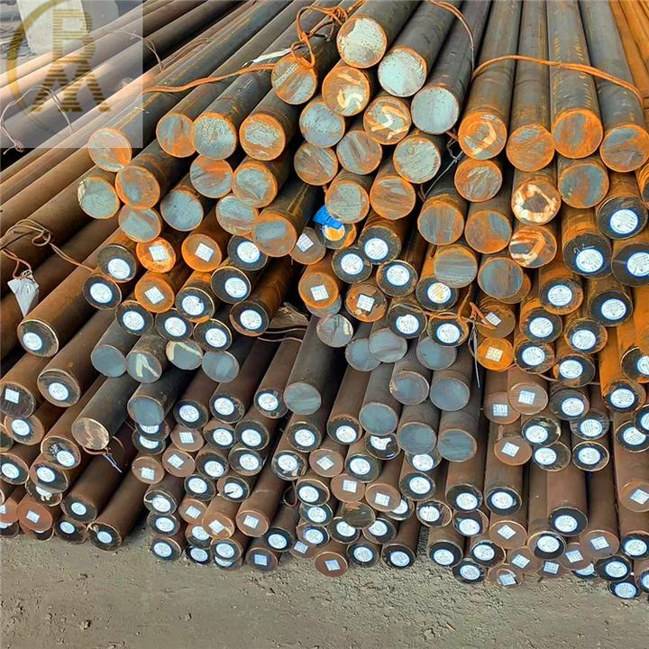

Material
metal-Spring steel
definition:
Spring steel refers to steel specifically used for manufacturing springs and elastic components due to its elasticity in quenched and tempered states. The elasticity of steel depends on its ability to undergo elastic deformation, which enables it to withstand a certain load within a specified range without permanent deformation after the load is removed.
Classification:
Carbon spring steel
The carbon content (mass fraction) of carbon spring steel is generally between 0.62% and 0.90%. According to its manganese content, it can be further divided into two categories: general manganese content (mass fraction) (0.50%~0.80%) such as 65, 70, 85, and higher manganese content (mass fraction) (0.90~1.20%) such as 65Mn.
Alloy spring steel
Alloy spring steel is a steel that improves the mechanical properties, hardenability, and other properties of carbon steel by adding one or several alloying elements appropriately, in order to meet the performance requirements for manufacturing various springs.
50CrVA
A small amount of vanadium improves elasticity, strength, yield ratio, and resilience, refines grain size, and reduces decarburization tendency. The carbon content is relatively low, and the plasticity and toughness are better than other spring steels. High hardenability and good fatigue performance are various important spiral springs, especially suitable for springs with high working stress amplitude and strict fatigue performance requirements, such as valve springs, fuel injector springs, cylinder expansion rings, safety valve springs, etc.
30W4Cr2VA
High strength heat-resistant spring steel. The hardenability is very good. High temperature anti relaxation and hot working performance are also good for heat-resistant springs with working temperatures below 500~C, such as steam turbine main steam valve springs, steam seal spring plates, boiler safety valve springs, 400t boiler disc valve springs, etc.
60CrMnMoA
Among various existing spring steels, the hardenability is the highest. Super large springs used in large civil engineering, heavy vehicles, machinery, etc., with good mechanical properties and anti tempering stability. The thickness of the steel plate can reach over 35mm, and the diameter of the round steel can exceed 60mm.

plastic
Plastic fresh-keeping box is a widely used storage tool, mainly used for storing and preserving food.
Main material: The plastic fresh-keeping box is mainly made of PP (polypropylene) material. PP is a colorless, non-toxic, and odorless semi transparent solid substance, which is a common material for making fresh-keeping boxes.
Features: The advantage of PP material preservation boxes is that they have good heat resistance and can withstand high temperatures of around 110 degrees Celsius. Therefore, they can be placed in a microwave for short-term heating. But its transparency is average, hardness is also poor, and improper use can easily cause scratches.
Food grade material
Refrigerate at -20° C
120℃ heating
Sealed preservation
Crush and drop resistant
Separate storage

composite
Wood plastic composite materials are a new type of composite materials that have flourished in recent years both domestically and internationally. They refer to the use of polyethylene, polypropylene, and polyvinyl chloride, instead of conventional resin adhesives, to mix with more than 50% of waste plant fibers such as wood powder, rice husks, and straw to form new wooden materials. These materials are then processed through plastic processing techniques such as extrusion, molding, injection/injection molding, to produce boards or profiles.
Main features:
Good processing performance; Good strength performance; Has water resistance and corrosion resistance, with a long service life; Excellent adjustable performance; Has UV light stability and good coloring properties.; Its biggest advantage is to turn waste into treasure, and it can be recycled and reproduced for free. It can be decomposed without causing "white pollution" and is a truly green and environmentally friendly product.; Widely sourced raw materials; It can be made into any shape and size as needed.
new materials
Graphene is a two-dimensional material formed by sp ² hybrid bonding of single-layer carbon atoms, with a single-layer hexagonal honeycomb lattice structure.
Structure: Graphene is an allotrope of carbon, and its unique single-layer structure gives it great surface area and high flexibility.
Physical properties: Graphene has high strength, high hardness, good conductivity and thermal conductivity, as well as excellent flexibility and transparency.
Chemical properties: Due to the single-layer structure of graphene, its chemical reactivity is much higher than that of three-dimensional materials of the same area.
Graphene nanocoated flexible photovoltaic panels not only inherit the excellent performance of graphene, but also have unique advantages of flexible photovoltaic panels:
Efficient conversion rate: Graphene photovoltaic panels have a wider absorption range, greatly improving conversion rates, up to over 80%.
Flexibility: Compared to traditional silicon-based solar panels, graphene solar panels can be made into flexible and scalable forms, suitable for a wider range of application scenarios, such as vehicle mounted panels.
Lightweight: Graphene photovoltaic panels are relatively lightweight compared to traditional solar panels, reducing installation and transportation costs.
working principle:
The working principle of graphene batteries is similar to traditional batteries, mainly including two processes: charging and discharging.
During the charging process, the current flows from an external power source to the battery. The positive electrode absorbs electrons and embeds ions into the positive electrode material, while the negative electrode releases electrons for external circuit use. This process will cause lithium or sodium ions in the positive electrode particles to embed into the positive electrode lattice, while electrons will flow towards the negative electrode through an external circuit.
During the discharge process, embedded ions in the battery are released from the positive electrode and transferred to the negative electrode through the electrolyte. The negative electrode absorbs electrons and embeds ions into the negative electrode material, while the positive electrode releases electrons for external circuit use. By continuously cycling charge and discharge, graphene batteries can achieve energy storage and release functions.
Self healing concrete is a new type of composite material that mimics the regeneration and recovery mechanism of animal bone tissue structure after trauma.
Principle: Self healing concrete contains dormant bacterial spores that can produce limestone and nutrients required for bacterial growth. When corrosive rainwater seeps into the concrete and acts on the structure, these bacterial spores are activated to start producing limestone and locally filling the cracked parts of the concrete.

Methods post processing for metal
Anodizing is the electrochemical oxidation of metals or alloys, in which aluminum and its alloys form an oxide film on aluminum products (anodes) under specific electrolyte and process conditions through the action of an applied current.
Process principle
Anodic dissolution: In the anodizing process, aluminum alloy is placed as an anode in the electrolyte solution. When an external DC power supply is applied to the anode, a dissolution reaction begins, causing aluminum ions (Al ³+) to enter the electrolyte solution.
Oxidation reaction: The acidic components in the electrolyte solution (such as sulfuric acid, phosphoric acid, etc.) cause an oxidation reaction. Under the action of an external power source, aluminum ions undergo an oxidation reaction on the anode surface, generating aluminum oxide (Al ₂ O æ).
Generating oxide film: Oxygen bubbles caused by oxidation reactions form small pores on the anode surface, which combine with aluminum ions on the anode surface to form a dense and uniform oxide film. This oxide film has ceramic like properties, excellent corrosion resistance, hardness, and wear resistance.
Anodizing Surface Treatment Work - The Role of Arc Light Nano PVD Coating
Focusing on the advantages of integrated nanotechnology coating solutions, self-lubricating properties
The mold coating forms chemical and thermal barriers on the surface of the mold, making the mold surface self-lubricating, reducing friction and chemical reactions between the mold and the workpiece, and reducing wear and tear
Enhanced hardness:
The mold coating brings high hardness to the surface, thereby improving the wear resistance of the mold, preventing mold scratches, and extending the service life of the mold by 3-10 times
High temperature oxidation resistance:
Mold coating increases the oxidation resistance temperature value of the mold, enabling it to be processed and produced under high temperature conditions above 1200 ° C for more complex environments
Prevent mucous membranes:
Mold coating makes the surface of the mold delicate and dense, improving the anti sticking effect of the mold and making it more conducive to film removal
Improve efficiency:
Eliminating the hassle of demolding, polishing, and reloading molds, ensuring stable quality and saving raw material loss for upper and lower molds, shortening production cycles, and improving production efficiency
Detailed overview of safety requirements for anodizing process:
1、 Chemical safety
Chemical selection: Use pure acidic solutions as electrolytes, such as sulfuric acid, copper sulfate, etc.
Chemical storage: Store chemicals in safe containers to avoid leakage and misuse. The storage area should be dry, well ventilated, and away from sources of fire and heat.
Chemical use: During the operation, operators should wear personal protective equipment such as chemical protective gloves and goggles to prevent harm to the body caused by chemicals.
2、 Electrical safety
Electrical equipment: Ensure that electrical equipment meets safety standards and is regularly inspected and maintained. Avoid contact with electrical equipment with water or other liquids to prevent electric shock accidents.
Current control: Control the current density to avoid excessive current density causing electrolyte boiling, splashing, or excessive oxidation.
3、 Operational safety
Laboratory environment: Keep the laboratory dry and well ventilated to avoid interference from moisture on the anodizing process.
Preparation before operation: Clean and degrease the metal surface to remove impurities such as oil stains and oxide layers, in order to improve the oxidation effect. Select appropriate anode materials and perform surface cleaning and treatment to ensure that the material surface is free of impurities such as oil and dust.
Operation process: During the operation, be careful when handling the battery and current to avoid dangers such as electric shock and short circuits.
4、 Waste liquid treatment
Waste liquid treatment: Carry out waste liquid treatment in accordance with relevant regulations to ensure environmental safety. Waste liquid treatment should comply with environmental regulations to avoid pollution to the environment.

Methods post processing for plastic
1. The concept of plastic screen printing
Plastic screen printing is a printing method that uses scraper pressure to print ink through a mesh onto plastic or other printing materials.
Mesh is made of fine silk and can print various shapes and specifications of patterns, such as letters, numbers, logos, and images.
2. The process flow of plastic screen printing
Original design: Design patterns according to customer needs.
Plate making: Create a screen version containing the desired pattern.
Printing operation: Use a scraper to press the ink out of the mesh of the screen plate and transfer it to the plastic substrate.
Post process: may include steps such as drying, cleaning, and inspection to ensure printing quality.
3. Characteristics of plastic screen printing
Fast printing speed: Compared to other printing technologies, plastic screen printing can achieve faster printing speed and improve production efficiency.
Low printing cost: Due to the use of screen printing, a large number of products can be printed at once, reducing the printing cost per unit product.
Good printing effect: Plastic screen printing can print clear and long-lasting patterns, suitable for various materials such as paper, plastic, glass, etc.
Wide application range: Plastic screen printing technology is widely used in many industries such as electronics, automobiles, healthcare, toys, furniture, etc.
4. Precautions for plastic screen printing
Material selection: Suitable plastic substrates and inks need to be selected according to printing needs.
Quality control: Pay attention to controlling various parameters during the printing process, such as pressure, speed, and ink consistency, to ensure printing quality.
Environmental protection: Pay attention to the environmental performance of ink to avoid pollution to the environment.
视频链接
methods post processing for wood
Wood lamination technology is a process that utilizes the characteristics and advantages of wood to stack and tightly combine multiple layers of thin wood pieces through high-temperature and high-pressure treatment, thereby producing high-strength and durable materials.
process flow
Raw material preparation: Cut the wood board into the required size of wood pieces.
Prepare adhesive: Prepare the required adhesive according to the instructions for using the adhesive.
Coating adhesive: Use a coating machine to evenly apply the adhesive onto the surface of the wood sheet.
Placing wood pieces: Arrange the wood pieces coated with adhesive in a staggered manner to form a laminated structure.
Pressing wood pieces: Place the placed wood pieces into a press to apply a certain amount of pressure, and adjust the pressing time according to the requirements of the adhesive.
Drying treatment: Dry the pressed wood pieces to ensure that their adhesive is fully cured.
Cut to size: Use a cutting machine to cut the wooden laminated board according to the required size.
Sorting and inspection: Sort and inspect the cut wooden laminated board to ensure that the quality meets the requirements.
Packaging and leaving the factory: Packaging and labeling the wooden laminated panels that meet the requirements, and preparing them for leaving the factory.
The role and efficacy of water-based primer in surface treatment of wood
1. Protecting Wood
2. Improve painting quality
3. Reduce painting costs
4. Good compatibility
5. Easy to construct and maintain
As an important part of the wood painting process, water-based primer has various unique advantages and effects. It can effectively protect wood, improve coating quality, reduce costs, have good compatibility, and is easy to construct and maintain. Waterborne primer is a widely used choice in both home decoration and commercial fields.
视频链接
materails in your final project
The reason for choosing resin clay as the main material for potted plants: Due to its high plasticity and strong texture, resin clay is commonly used to make simulated flowers, simulated food, etc. The simulated handicrafts produced by it are extremely close to the real product in terms of appearance, color, and texture, vivid and realistic, with a natural form. Resin clay has excellent ductility and can be made very thin and transparent, making it very suitable for making various delicate simulation works. Resin clay has strong extensibility and can be made very thin and transparent, with excellent coloring effect, almost achieving the effect of blurring the real.
The method of using resin clay to make potted plants
Material preparation: 1. Prepare the required materials such as resin clay, carving tools, color powder, etc.
2. Take out the resin clay and knead it until it completely blends without any gaps. After kneading, gently pat the table a few times to expel the air from the clay.
3. Conduct styling. Shape the required elements such as soil and plants on the base that we have prepared in advance.
4. Wait for the resin clay to air dry naturally. After drying, use color powder to color the shaped clay.
Resin is an organic polymer material with various characteristics and wide applications. Resin usually refers to organic polymers that have a softening or melting range after being heated, and have a tendency to flow under external forces during softening. They are solid, semi-solid, and sometimes liquid at room temperature. In a broad sense, any polymer or prepolymer that can be used as a plastic substrate can be referred to as a resin.